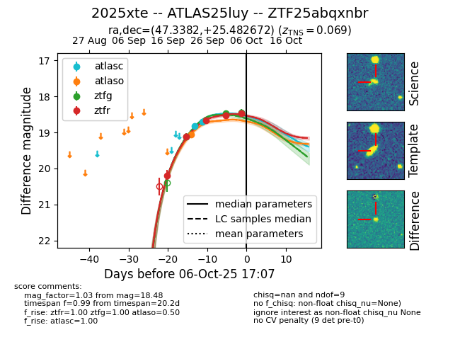
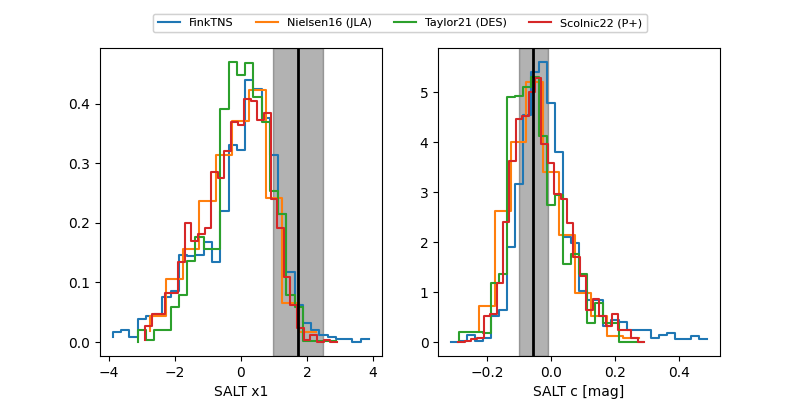

FINK: ZTF25abqxnbr
Lasair: ZTF25abqxnbr
ALeRCE: ZTF25abqxnbr
TNS: 2025xte
YSE: 2025xte
ZTF25abqxnbr (ztf,fink)
2025xte (tns,yse)
ATLAS25luy (atlas)
equatorial (ra, dec) = (47.3382,+25.48267)
galactic (l, b) = (158.2142,-27.78114)


last atlasc=18.70, atlaso=19.06, ztfg=18.44, ztfr=18.48
2 atlasc, 1 atlaso, 3 ztfg, 5 ztfr detections